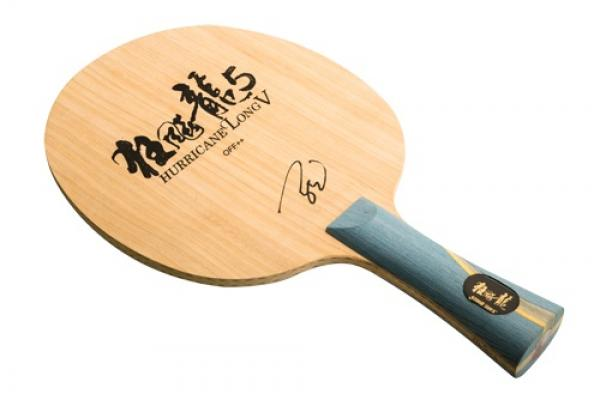

 This blade is one of the best in the current (commercial) DHS offering.
It is mostly sold with FL handle, although some CHinese websites seem to sell ST versions. It weights +/- 93 grams, so not a light blade. The blade face dimensions are also slightly bigger than most. BTY blades are generally 157x150mm, and this HL5 is 160x151. However, the balance of the blade is very good and once in hand, it is not head heavy at all, even when fitted with rubbers (currently Omega V Pro and Vega Asia).
The blade is composed of the following layers Limba - Limba - ALC - Ayous - ALC - Limba - Limba. This is similar to the BTY Innerforce ALC, but the HL5 is stiffer. The blade thickness, at 5.9 mm, is similar to many popular blades.
The throw is medium, so the blade will match most rubbers depending on style. With high (ish) throw rubbers, it's a looping machine, while with a medium throw rubbers, it's great for blocking. The blade quality is very high the finish is excellent and it comes in a very nice box, with an individual "blade ID card" with dimensions, weight, thickness and serial number.
The limba outer layer give it a nice dwell and facilitate spin. It is very easy to control, and is very stable as you play with more power. There are some vibrations, enough to get good feedback from your shot. This blade is expensive, but you will find it discounted sometimes from reputable shops. Is it the best blade I ever played with? Very likely. Not for beginners though.